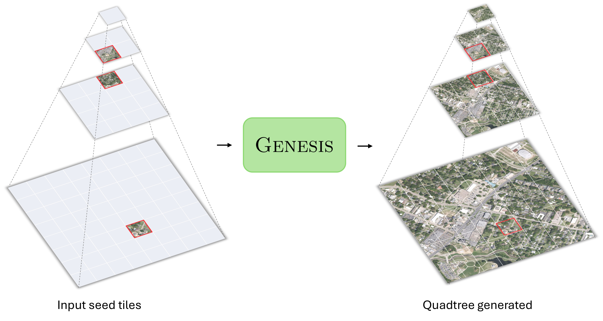
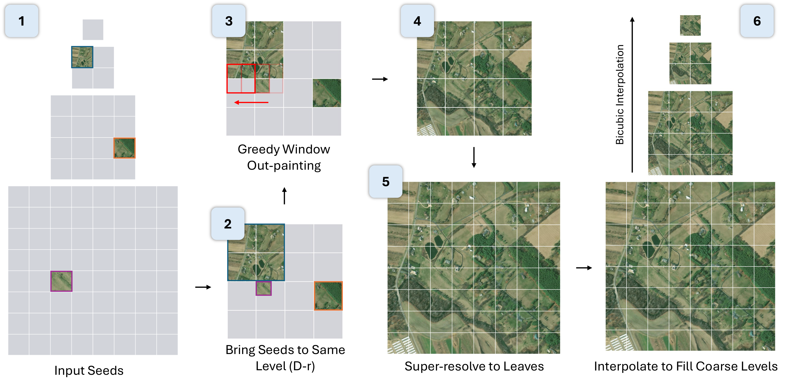
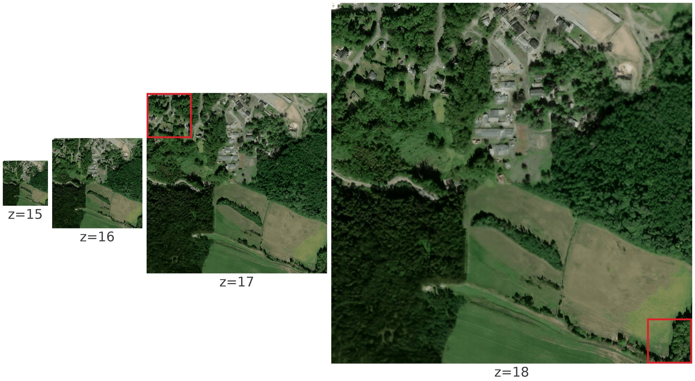
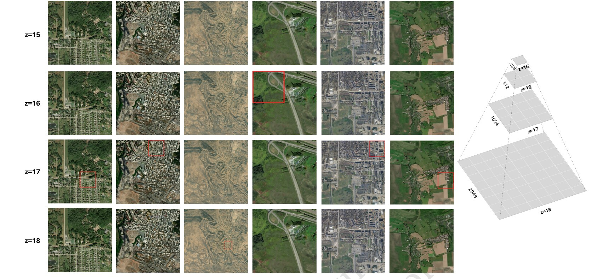

Grow a complete, zoomable satellite image pyramid from a handful of seed tiles.

Two flow-matching JiT operators — a parent-conditional super-resolution model (one 256×256 parent → the 512×512 mosaic of its four children) and a mask-based outpainting model — composed into one pyramid engine.



🌍 Code — github.com/mvrl/genesis: training, evaluation, the pyramid engine, and interactive Gradio demos.
🤗 Models — huggingface.co/MVRL/genesis: all checkpoints (SR + outpainting, JiT-B/16 & JiT-H/16), the DINOv3-sat encoder, and the evaluation metadata.
🗺️ Benchmark — dense500: 500 fully-observed depth-4 quadtrees (85 tiles each) across five zoom windows, for scoring pyramid completion against ground truth at every level.
@inproceedings{khanal2026genesis,
title = {{Genesis}: A Generative Engine for Hierarchical Satellite Image Synthesis},
author = {Khanal, Subash and Cui, Yangzhi and Cher, Daniel and Xing, Eric and
Wei, Brian and Sastry, Srikumar and Jacobs, Nathan},
booktitle = {ACM SIGSPATIAL International Conference on Advances in
Geographic Information Systems (SIGSPATIAL)},
year = {2026},
}